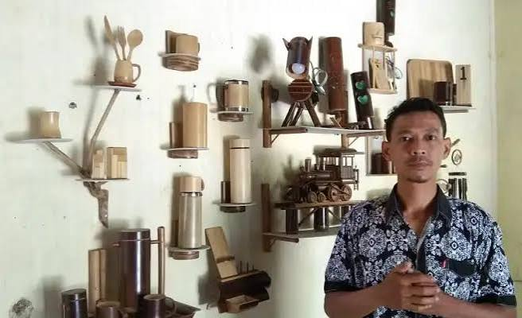
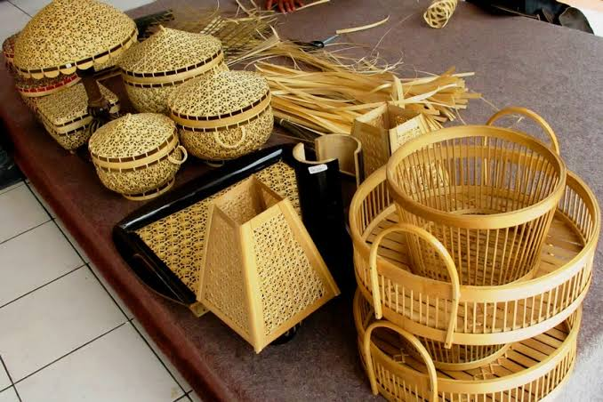

Bambu telah lama menjadi sahabat kehidupan masyarakat Karanganyar, jauh sebelum kata "ramah lingkungan" menjadi tren. Di halaman-halaman rumah yang rindang, rumpun bambu tumbuh setia menjadi sumber bahan yang tak pernah habis — dan di tangan para pengrajin, ia berubah menjadi anyaman yang membentuk keseharian: tampah, besek, bakul, hingga furnitur dan aksesori dekoratif kontemporer.
Anyaman yang Menyambungkan Generasi
Teknik menganyam bambu di Karanganyar dipelajari bukan dari buku, melainkan dari duduk di samping nenek atau ibu yang tangannya bergerak cepat membentuk pola. Setiap pola anyaman punya nama, punya fungsinya, dan punya cara membuatnya yang khas — sebuah pengetahuan praktis yang hidup dalam gerakan tangan, bukan dalam tulisan.
"Menganyam bambu itu seperti merajut kesabaran. Salah sedikit pola, harus dibongkar lagi dari awal. Tapi justru di situ letak nilainya."
Fakta Menarik
- Satu anyaman bambu sederhana bisa membutuhkan puluhan hingga ratusan helai bilah yang disiapkan secara manual
- Bambu yang digunakan biasanya direndam dan diolah terlebih dahulu agar lebih lentur dan tahan jamur
- Pola anyaman tertentu hanya diketahui oleh pengrajin tertentu dan diwariskan secara sangat terbatas
- Produk kerajinan bambu Karanganyar mulai merambah pasar ekspor untuk segmen dekorasi rumah artisanal


Mengapa Penting?
Di era ketika produk plastik sekali pakai masih mendominasi, kerajinan bambu adalah pengingat bahwa kearifan lokal sudah lebih dulu menemukan solusi yang berkelanjutan. Menjaga kerajinan ini tetap hidup berarti menjaga pengetahuan tentang cara hidup yang lebih selaras dengan alam.